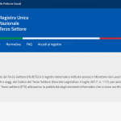
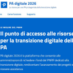

Il DigiPASS Spoleto è stato inaugurato il 25 giugno 2019 e sarà punto di riferimento anche per le zone di Campello sul Clitunno, Castel Ritaldi e Giano dell’Umbria.
La sede è in via Antonio Busetti, 28, situata accanto allo Sportello del Cittadino, al punto Europa e all’Informagiovani, dotata di sala multimediale con 16 postazioni di lavoro, accesso wi-fi gratuito e area relax.
Per quanto riguarda gli altri comuni che compongono la zona sociale n.9 (Campello Sul Clitunno, Giano dell’Umbria e Castel Ritaldi) è stata prevista una apertura settimanale.
Giorni e Orari di apertura
Spoleto
Via Antonio Busetti, 28
Lunedì 09:00/12:00 – 14:30/17:30
Martedì 09:00/12:00
Giovedì 09:00/12:00
Venerdì 09:00/12:00
Giano dell’Umbria – Biblioteca Comunale
Ex Teatro – Complesso di San Francesco
Mercoledì 15:30/18:30
Campello Sul Clitunno – Biblioteca Comunale
Via Landi – Palazzo Casagrande
Martedì 15:30/18:30
Castel Ritaldi – Biblioteca Comunale
Via Scigliano, 3
Mercoledì 09:00/12:00
email: digipass.spoleto@comune.spoleto.pg.it
Facebook: DigiPASS Spoleto
whatsapp 3351000221
Telefono 0743218152
Responsabile del procedimento del comune: Dina Bugiantelli dina.bugiantelli@comune.spoleto.pg.it
Notizie
SPID per iscriversi al Registro Unico Nazionale del Terzo Settore
27/12/2021
SPID per iscriversi al Registro Unico Nazionale del Terzo Settore
SPID e Carta di Identità Elettronica (CIE) possono essere utilizzati per accedere alla piattaforma online ...
Cittadinanza italiana: si richiede online solo con SPID
24/12/2021
La richiesta di cittadinanza italiana, per i residenti in Italia, si presenta solo online sul portale cittadinanza del Ministero dell’Interno con SPID.
Oltre a garantire un’autenticazione semplice e veloce alla piattaforma, l’accesso tramite l’identità digitale evita la convocazione del richiedente negli uffici per ...
Scuola, iscrizioni online dal 4 al 28 gennaio. Serve SPID
10/12/2021
Le iscrizioni al prossimo anno scolastico 2022/2023 possono essere presentate online dal 4 al 28 gennaio 2022 dal portale del Ministero dell’Istruzione “Iscrizioni online”.
Per accedere al portale serve SPID, CIE o eIDAS.
La ...
Nasce PA digitale 2026: le risorse del PNRR per la transizione digitale della PA
24/11/2021
Il Dipartimento per la trasformazione digitale, guidato dal Ministro per l’innovazione tecnologica e la transizione digitale, ha lanciato PA digitale 2026, la piattaforma che consentirà alle amministrazioni di richiedere i fondi del PNRR dedicati al digitale, rendicontare l’avanzamento dei progetti e ...
Premio Nazionale per le Competenze Digitali
19/11/2021
Fino al 17 gennaio 2022 ci si può candidare al 1° Premio Nazionale per le Competenze Digitali, iniziativa di Repubblica Digitale promossa dal Dipartimento per la trasformazione digitale della Presidenza del Consiglio dei Ministri e realizzata con ...